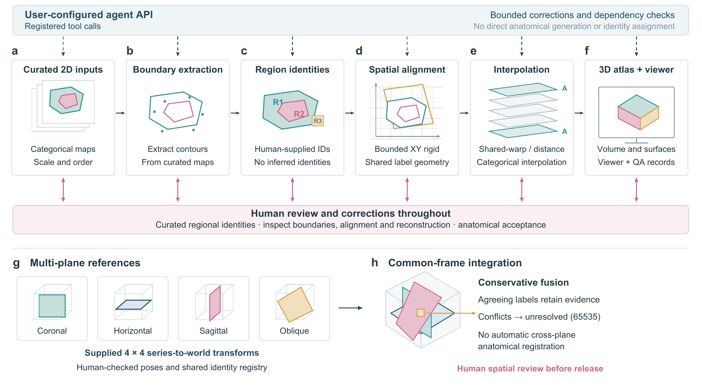

A local pipeline that turns manually curated 2D atlas sections into an aligned, labelled 3D volume with an interactive viewer and a record of its corrections.
Input example: ZIP of label maps and manifest or one JSON file. See input preparation for section positions, identities and multi-plane inputs.
The build_atlas(...) function accepts your input, output location and optional API credentials. See the Python and HTTP API guide. The same reconstruction tools work without an API token.
AtlasCraft preserves original inputs, keeps aligned anchors exact and logs bounded geometric corrections. Interpolated tissue remains inference. Across complementary series, conflicting region labels stay unresolved. Human experts retain anatomical acceptance.
Only procedural synthetic examples are bundled. Sources supplied by users retain their own attribution and reuse conditions. See licensing and source rights.

AtlasCraft 2.0.0 · Local application and offline viewer · The schematic contains no empirical anatomical measurements.